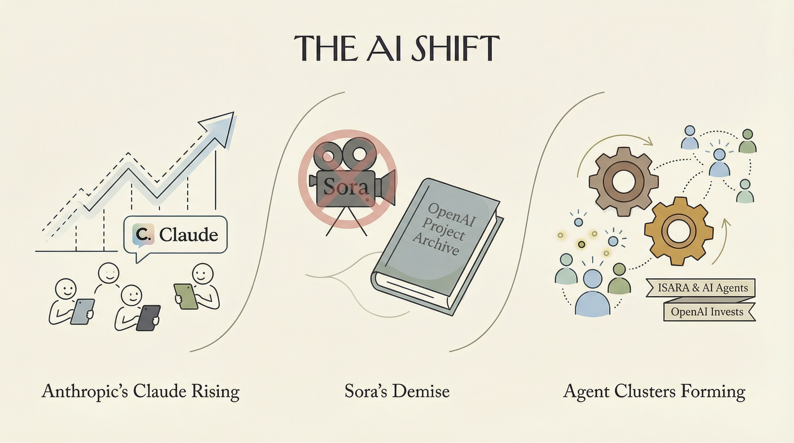

Anthropic的Claude付费用户增长迅速，订阅量翻倍。
两克伴AIGC日报
2026-03-29 星期日

本期关注：Anthropic的Claude在付费消费者中的受欢迎程度正在飞速上升。、为什么OpenAI杀死了Sora、OpenAI加入Isara 9400万美元融资，共同开发AI代理集群 - MLQ.ai、OpenAI投资Isara，一家价值6.5亿美元的初创公司，致力于构建人工智能代理集群——The Next Web
📰 行业动态
OpenAI取消视频生成应用Sora，并调整与迪士尼的合作计划。
OpenAI参与投资Isara，助力其开发AI代理群。
OpenAI投资Isara，助力其开发AI代理群。
🔥 今日焦点
Anthropic近日发布了Claude的新功能，使其能够直接控制计算机，实现打开应用、点击按钮、滚动页面、输入文字等操作，目前仅支持mac操作系统。这一突破性进展标志着AI技术从单纯的API调用迈向了实际应用层面，为Windows用户带来了一定的遗憾。与此同时，OpenClaw和Zenmux也迎来了重大更新，包括推出新的插件SDK、官方插件商店ClawHub，以及自动映射Claude、Codex和Cursor的技能。此外，模型升级至M 2.7和GPT-5.4，展现出AI在实现实际工作方面的巨大潜力。
这一事件对AI领域具有重要意义。首先，它验证了AI技术在实际应用中的可行性，为AI与人类工作协同提供了新的思路。其次，Claude和OpenClaw等产品的推出，展现了AI在模拟人类操作和构建结构化操作系统方面的创新。这将为AI领域带来更多可能性，推动AI技术向实用化、智能化方向发展。
Bluesky近日推出了一款名为Attie的新应用，该应用利用人工智能技术助力用户构建个性化的定制信息流。这款基于开放社交网络协议atproto的应用，旨在为用户提供更加精准和个性化的内容推荐。Attie的核心功能在于通过AI算法分析用户的兴趣和行为，从而生成符合用户喜好的定制化信息流。
这一举措对于AI领域具有重要意义。首先，Bluesky通过将AI技术应用于社交网络，展示了AI在个性化推荐领域的强大潜力，为其他社交平台提供了新的发展方向。其次，Attie的推出有助于推动AI算法在社交网络中的应用，进一步促进AI技术的发展和创新。
📚 深度长文
本文探讨了“代理式编程”在解决复杂问题时的强大能力。作者Matt Webb指出，代理式编程能够将问题分解至尘埃，即使需要消耗大量资源，也能长期解决问题。然而，我们希望AI代理能够快速、可维护、自适应和可组合地解决编程问题，并使整个系统因每个新增功能而变得更加强大。
文章强调，实现这一目标的关键在于构建优秀的库，这些库能够封装复杂问题，并提供易于使用的接口，使开发者能够轻松构建应用程序。作者认为，在“vibing”（一种新的编程状态）时，他关注的不再是代码行数，而是架构。这一观点突显了架构在软件开发中的重要性，为AI从业者提供了独特的见解。
本文探讨了在人工智能发展迅速的背景下，如何应对产品策略滞后、预估偏差等问题。作者Kiyani以一次在旧金山的独特经历为引，将Claude Code与Codex进行搭配，深入剖析了社区智慧在AI发展中的重要作用。文章指出，当AI发展速度超过产品策略时，企业应如何调整策略，以及如何通过社区智慧来应对预估偏差。文章结合实际案例，提出了应对策略，为AI从业者提供了宝贵的参考。阅读本文，有助于深入理解AI发展中的挑战与机遇，提升产品策略制定与执行能力。
---
本文深入探讨了负载均衡器和API网关在客户端与后端服务器之间的作用。作者ByteByteGo从多个角度对比了这两种技术，揭示了它们在架构设计、性能优化、安全性等方面的差异。文章核心观点在于，虽然两者都位于客户端与后端服务器之间，但它们在实现方式、功能定位和适用场景上存在显著区别。
文章首先分析了负载均衡器和API网关的基本概念，阐述了它们在分布式系统中的重要性。接着，作者通过具体案例，详细对比了两种技术在负载分发、服务发现、安全防护等方面的差异。此外，文章还探讨了负载均衡器和API网关在微服务架构中的应用，以及如何根据实际需求选择合适的技术方案。
🛠️ 产品推荐
Nanopm是一款针对Claude Code的PM自动化工具，通过SKILL.md标准实现产品管理的全流程自动化。其核心功能为一条命令（/pm-run）即可完成从审计到目标、策略、路线图直至PRD的完整规划周期。Nanopm通过Markdown文档传递信息，确保上下文在整个流程中得以累积。该工具特别强调持久化记忆功能，将产品信息存储在~/.nanopm/memory/中，方便用户在六个月后重新审计。Nanopm旨在帮助技术从业者提高产品管理效率，解决项目管理中的信息传递和记忆问题。
---
Show HN: Drag-to-Reveal Before/After Slider Component for React/Next.js是一款基于React/Next.js和Tailwind的交互式拖动显示前后对比图片组件。该产品旨在解决服务类企业网站中常见的前后对比图片展示问题，通过简单的拖动操作即可实现图片的切换，提升用户体验。组件支持移动端响应式设计，易于集成，售价仅为10美元。该组件的推出，为网站开发者提供了高效、便捷的图片展示解决方案。
---
Show HN: Share2ChatGPT Widgets / Buttons是一款基于AI技术的创新产品，旨在为用户提供便捷的GPT聊天功能。该产品通过集成GPT聊天小部件和按钮，允许用户在网页上轻松实现智能对话。Share2ChatGPT的核心功能是简化GPT接入流程，让用户无需安装额外软件即可享受GPT的强大AI能力。此举有效解决了用户在获取和使用GPT服务时遇到的复杂性和不便，极大地提升了用户体验。